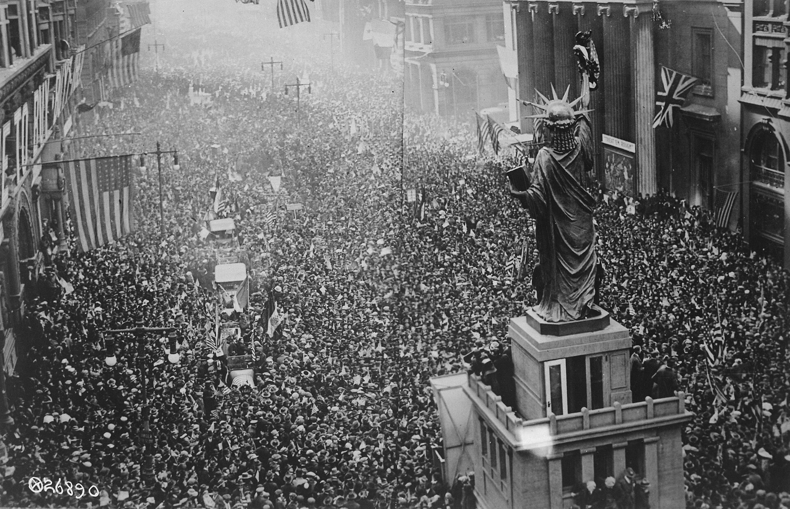

Chapter 20
The Nurses’ Last Rounds
Seen from above, across the whole map of Philadelphia at 11 a.m. on November 11, 1918, there is only the city—and then its factory whistles begin to scream. The sound came first from the Baldwin Locomotive Works on North Broad Street, then from the textile mills along the Schuylkill, then from the Navy Yard across the Delaware, until two hundred separate blasts merged into a single continuous roar that rolled through the city’s grid like a physical object. Church bells added their deeper notes. Streetcars stopped where they stood. In Center City, office workers threw open windows and began to cheer.
Six miles northeast, in the influenza ward of the Emergency Hospital at 22nd and Huntingdon, a nurse held a thermometer to the light. The patient was a machinist’s wife from Kensington, forty-three years old, whose fever had held at 103 degrees for three days. The mercury stood at 101.2. The nurse made a note in her ward diary—temperature down, respiration elevated, color poor—and did not look up when the whistles began. She had been on duty since 6 a.m. She would remain until 8 p.m. The whistles meant nothing to her except that the noise would make it harder to hear the patient’s breathing.
The contrast was absolute. In the streets, the war had ended. In the ward, a woman continued to fight for air.
—-
The Emergency Hospital had been converted from a police station in the second week of October, when established hospitals could no longer accept patients. It held 112 beds in what had been cell blocks and administrative offices. The conversion had been hasty: walls still bore the institutional green paint of the municipal building, and windows designed for security rather than ventilation opened only six inches at the top. By November 5, the hospital was admitting its final serious cases. The epidemic had peaked in the week of October 12–19, when 4, 597 Philadelphians died of influenza or its complications. The death rate had fallen since, but slowly, unevenly, with each day’s mortality returns showing hundreds still succumbing. The Bureau of Health’s daily bulletins had begun to speak of improved conditions, but the nurses knew what the bulletins omitted: that improved conditions meant only that the dying were fewer, not that the dying had stopped.
The nurse at 22nd and Huntingdon was thirty-four years old, a graduate of the Philadelphia General Hospital Training School, unmarried, living in rooms on Spruce Street when she was not sleeping at the hospital. She had volunteered for influenza duty on October 3, the day Wilmer Krusen ordered the closure of schools and theaters. Her diary, kept in a leather-bound memorandum book intended for household accounts, recorded the work in fragments: temperatures, medications, names of patients who asked her to write letters, names of patients who died before the letters could be written. She did not describe her own exhaustion. The diary’s physical condition testified to it: pages grew looser in their binding as October advanced, handwriting more compressed, entries shorter. By November 5, she was recording only vital signs and outcomes, the prose stripped to its functional minimum.
The whistles continued for twenty minutes. When they stopped, the nurse heard the patient say something. She leaned close. The woman was asking whether her husband knew where she was. The nurse told her yes. The husband had been admitted to the same hospital three days earlier, pneumonia, ward three. He had died that morning at 7 a.m. The nurse did not say this. She adjusted the patient’s oxygen tent and moved to the next bed.
—-
Across the city, the celebration was already assuming its forms. The Evening Public Ledger had prepared a special edition with the headline “PEACE!” in type three inches high. The newspaper’s delivery trucks, which had spent October carrying death notices and emergency health regulations, now distributed newsboys to street corners with bundles of triumph. At Independence Hall, a crowd began to gather before noon, pressing against the iron fence, waiting for something official to happen. The mayor was at his desk. The governor was in Harrisburg. No one had planned a ceremony because no one had known when the ceremony would be needed. The Armistice had come suddenly, following days of false reports and contradictory telegrams from Europe. The city improvised.
In the telephone exchange at 19th and Arch, where operators had worked through the epidemic wearing gauze masks supplied by the Bureau of Health, the supervisor allowed her staff to remove the masks for the first time since October 3. The operators, mostly young women from South Philadelphia and Germantown, pinned the masks to their station boards as souvenirs. They had handled emergency calls through the worst weeks: families begging for ambulances, doctors requesting nurses, the Bureau of Health transmitting orders to police districts. The masks were sodden, stained with lipstick and face powder, useless now except as evidence of what they had survived. The supervisor let the operators keep their trophies while the board lit up with calls of a different kind—relatives seeking relatives, strangers seeking strangers, everyone seeking confirmation that the war was truly over.
The exchange had lost three operators to influenza in October. Their stations had been filled within hours by volunteers from the telephone company’s reserve list. No memorial had been held. The work had not permitted it.
—-
At the Hospital of the University of Pennsylvania, on Spruce Street between 34th and 36th, the medical staff faced a different problem. The hospital had never closed to influenza patients; its wards had remained open throughout the epidemic, accepting cases that other institutions could not manage. By November 8, the census had fallen to forty-three influenza cases, down from a peak of 187 in mid-October. The remaining patients were the difficult ones: those with secondary bacterial infections, those whose pneumonia had become empyema, those too weak to recover quickly or die quickly. The hospital’s nurses, who had worked twelve-hour shifts through the worst weeks, were now working ten-hour shifts. The reduction was official, announced in the nursing superintendent’s bulletin of November 4. No one felt the difference.
Helen McClelland, the hospital’s director of nursing, kept a ward journal separate from her personal correspondence. The journal recorded supplies, staffing, patient movements. On November 7, she noted that six student nurses had been returned to their training duties from influenza service, condition satisfactory. On November 8, she noted that three graduate nurses had submitted resignations, effective immediately, reasons not stated. McClelland did not write what she knew: that the resignations were medical, that two of the three nurses had developed symptoms in late October and had continued working until collapse, that the third had watched her sister die in the hospital’s emergency ward and could no longer enter the building without vomiting. The journal’s formality was its own kind of exhaustion. McClelland had trained her staff to record only what could be verified. In the first week of November, verification itself had become a burden.
The Armistice found her in her office, reviewing requisition forms for winter supplies. The whistles reached her through closed windows. She did not open them. She finished the forms, noted the time—11:04 a.m.—and wrote in the journal: “Hostilities ceased. Ward routine unchanged.”
—-
The schism was not yet visible to those who experienced it. The city had developed, over six weeks of emergency, a bifurcated consciousness that allowed celebration and mourning to occupy adjacent rooms without interaction. The Bureau of Health’s daily bulletin of November 11, issued at 9 a.m. before news of the Armistice reached Philadelphia, reported 87 influenza deaths for the preceding twenty-four hours. The bulletin of November 12, prepared in the afternoon of the eleventh, reported 71 deaths and added a paragraph reminding citizens that closure orders remained in effect for theaters, movie houses, and other places of public assembly. The bulletin did not mention the Armistice. The Public Ledger’s special edition did not mention the 71 deaths. Each document addressed a separate city.

The nurses moved between these cities without comment. Their diaries and letters, examined later, show no record of resentment at the celebration, no explicit contrast between their work and the public joy. What they record is simpler: the continuation of tasks that the celebration did not interrupt.
On November 11, the nurse at 22nd and Huntingdon changed seventeen dressings, administered oxygen to four patients, assisted at one death, and wrote three letters to families. Helen McClelland approved supply requisitions, adjusted schedules, and interviewed a replacement for one of the resigned nurses. At the Philadelphia General Hospital, where the epidemic had struck first and hardest, a volunteer spent the morning bathing patients in Ward 12, the last ward still reserved for influenza cases. She had begun volunteering on October 5, when her fiancé died at the Navy Yard. She had not stopped.
Her diary entry for November 11 notes the peace declaration, a patient’s worsening condition, and a letter written to the patient’s wife in Pittsburgh. The entry gives no further comment.
The absence of commentary is itself evidence. These women had spent six weeks in an environment where emotional response was a luxury the work did not permit. They had learned to record facts and postpone feeling. The Armistice, when it came, was simply another fact: loud, unexpected, irrelevant to the temperature chart in their hands.
—-
But the schism was real, and it was widening. The Bureau of Health’s decision to maintain closure orders on November 11—orders scheduled for review on November 15—created a formal contradiction that the city could not acknowledge. The theaters were closed because public assembly spread disease. The streets were filled with public assembly because the war had ended. Wilmer Krusen spent the morning of November 11 in his office at City Hall, receiving telegrams of congratulation from other cities’ health departments and fielding telephone calls from theater owners demanding to know when they could reopen. He gave no answer. His minutes for the day show only that the Armistice had been signed and that existing orders would continue pending review.
Krusen had not joined the crowds. He had not made a statement. His silence was strategic—he understood that any appearance of celebration would expose him to charges of indifference—but it was also genuine. The mortality returns on his desk showed 71 deaths. The returns for November 10 had shown 87. The returns for November 9 had shown 94. The trend was downward, but the absolute numbers remained catastrophic. In the first eleven days of November, 738 Philadelphians had died of influenza. In the same period of 1917, the death toll from all causes had been 412. The epidemic was not over. The city’s ability to perceive it was ending.
This was the structural cost that the Armistice imposed. The celebration provided a narrative conclusion that the epidemic refused to supply. The war had ended on a specific day, at a specific hour, with documents signed and whistles blown. The epidemic ended gradually, messily, with disputed definitions and conflicting statistics. The city’s attention, trained by wartime to respond to official declarations, followed the Armistice and abandoned the health emergency. The nurses remained behind, but their remaining was increasingly invisible.
—-
On November 12, the Evening Public Ledger published a photograph of the crowd at Independence Hall. The image showed thousands of faces turned upward, mouths open in cheer, hats in the air. The caption read: “Philadelphia’s Joy Unconfined.” On the same page, in a column of type one-eighth the size of the headline, the newspaper reported that the Emergency Hospital at 22nd and Huntingdon would close on November 15, its remaining patients transferred to the Philadelphia General Hospital. The transfer was not described as a reduction in service. The newspaper called it consolidation of facilities.
The nurse at 22nd and Huntingdon learned of the closure on November 12, when the hospital’s administrator posted a notice in the ward. She made no entry in her diary. The diary ends on November 14, with a final temperature reading for the machinist’s wife, who had died on the evening of November 11, during the celebration, while the whistles were still echoing in the streets. The entry reads: “Mrs. T. Expired 6:47 p.m. Peace.”
The word sits alone on the page, its meaning unresolvable. Whether the nurse intended irony, resignation, or simple chronological notation, the record does not say. The diary was deposited with the Pennsylvania State Archives in 1934, along with her other papers. The archivist’s catalog note describes it as a nursing record from the influenza epidemic, incomplete.
—-
Helen McClelland’s journal continued through November with its administrative precision. On November 13, she recorded the transfer of three patients from the Emergency Hospital. On November 14, she noted that the Hospital of the University of Pennsylvania had been designated by the Bureau of Health as official receiving hospital for influenza cases, with remaining institutions to resume normal function. On November 15, she approved the return of twelve student nurses to their training, ward conditions permitting normal instruction.
The phrase “normal function” appeared twice in her entries for November 14–15. It was the Bureau of Health’s term, adopted in its official communications. McClelland used it without quotation marks, but her subsequent actions suggest she understood its limitations. On November 16, she requested additional funding from the hospital’s board of trustees for nursing staff restoration. The request cited depletion of personnel due to epidemic service. It did not cite specific numbers of deaths or resignations. The board approved the funding on November 20. The approval was announced in the hospital’s annual report as recognition of exceptional service.
The annual report, published in January 1919, devoted three pages to the hospital’s influenza response. It listed statistics: 1, 847 patients treated, 387 deaths, 12 nurses lost to illness. It named no nurses. The report’s conclusion stated that the hospital had met the emergency with characteristic efficiency and had resumed its normal operations without impairment. The word “resumed” appeared four times in the three pages. The word “trauma” did not appear.
—-
The volunteer at the Philadelphia General Hospital kept her diary through November and into December. She recorded her final day of service: November 18, 1918. She recorded the hospital’s farewell ceremony for volunteers: November 20, a brief gathering in the chapel, no names read aloud, a certificate of service handed to each woman as she left. She recorded her own departure from the city: November 22, train to Baltimore, to her parents’ house, to rest. The quotation marks around “rest” are hers.
The diary’s final entry is dated December 3, 1918. She had been home for eleven days. She wrote that she had dreamed of Ward 12 again, the beds empty but the lights on, that she had been looking for someone, that she woke before finding them. She did not write in the diary again. In 1923, she married a man from her family’s church in Baltimore. She did not return to nursing. Her papers, including the diary, were donated to the Historical Society of Pennsylvania in 1967 by her daughter, with a covering note that described them as her mother’s wartime journal, not of general interest.
—-
The Armistice celebrations continued through November 11 and into the night. The Public Ledger estimated the crowd at Independence Hall at 50, 000. The police estimated 30, 000. The Bureau of Health made no estimate. The closure orders were widely ignored: theaters opened their doors, saloons served drinks, the formal prohibition on public assembly became a dead letter enforced by no one. Krusen, informed of the violations, chose not to issue citations. His minutes for November 12 note that conditions warranted gradual relaxation and recommend lifting orders effective November 18. The recommendation was adopted by the mayor on November 15. The theaters reopened on November 18. The schools reopened on November 25.
The gap between these dates—between the celebration and the official restoration of normalcy—was filled by improvisation and selective blindness. The city had already decided, on November 11, that the emergency was over. The subsequent week of continued orders was a ritual gesture, performed for the record while the population resumed its habits. The nurses, who could not resume their habits because their habits had been consumed by the emergency, found themselves in a peculiar administrative void. They were no longer emergency workers, because the emergency had been declared ended. They were not yet normal workers, because the work of recovery continued. They occupied a category the city’s vocabulary did not recognize.
This was the perilous schism that the Armistice created. It separated the narrative of victory from the reality of aftermath, and in doing so, it made the aftermath unmentionable. The nurses who had sustained the city’s medical system through its collapse could not be celebrated without acknowledging the collapse. The collapse could not be acknowledged without questioning the management that had permitted it. The questioning could not occur because the war was over, the city was victorious, and the future demanded attention. The nurses were left with their certificates, their dreams, their diaries that ended in mid-sentence or trailed into silence.
—-
On November 15, the Emergency Hospital at 22nd and Huntingdon closed. The remaining patients—twenty-three in all—were transferred to the Philadelphia General Hospital in three ambulances. The transfer began at 9 a.m. and concluded at 11:30 a.m. The administrator walked through the empty wards with a clipboard. He noted that equipment had been removed, linens destroyed, premises ready for police occupancy. The police did not reoccupy the building. It remained empty until 1921, when it was demolished for the expansion of the Philadelphia Rapid Transit Company’s carbarns.
The administrator’s final report to the Bureau of Health, dated November 16, listed the hospital’s statistics: 1, 403 patients admitted, 312 deaths, 47 nurses employed, 23 nurses lost to illness. The report recommended permanent establishment of emergency hospital capacity for future epidemics. The recommendation was filed without action. The Bureau of Health’s annual report for 1918, published in March 1919, did not mention the Emergency Hospital. It listed instead the successful management of the influenza emergency through existing facilities, and noted that volunteer nursing organizations proved adequate to the demand.
The volunteer nursing organizations were already dissolving. The Women’s Committee of the Council of National Defense, which had coordinated much of the volunteer effort, held its final meeting on November 20. The minutes recorded thanks to the women of Philadelphia who answered the call, and announced the committee’s transformation into a permanent civic organization focused on post-war reconstruction. The influenza was not mentioned. The committee’s chairman had lost her son to the disease on October 14. She did not speak of him at the meeting. The minutes record her only statement: “The war is over. Our work continues.”
—-
The nurses who had kept the city going through October and early November found their own ways of ending. Some returned to their training or their positions, integrating the experience into resumes that described emergency service without specifying its nature. Some left nursing entirely, unable to resume the normal routines that their abnormal service had disrupted.
The records of the Philadelphia General Hospital’s nursing school show that six graduates of the class of 1918 died before 1925, a mortality rate three times higher than the classes of 1916 and 1919. The causes listed are various: pneumonia, heart disease, wasting illness. The hospital’s alumni association, in its 1925 history, devoted a paragraph to the sacrifices of the influenza period, naming no names, giving no specifics. The paragraph concluded that the school had emerged from the trial with enhanced reputation.
The reputation was real. The trial was real. The connection between them—that the enhancement had been purchased at a cost the institution would not acknowledge—was left for later interpreters to discover. The nurses had been trained to record facts and suppress commentary. The institution they served had learned the same discipline. Together, they created a silence that the Armistice celebration made permanent. The war was over. The dying had not stopped. The city chose to hear only the first of these truths.
—-
On November 18, 1918, the theaters reopened. The Evening Public Ledger reviewed the first performances: a musical comedy at the Chestnut Street Opera House, a melodrama at the Walnut, a film at the Stanley. The reviews noted the enthusiasm of the audiences, the relief of performers, the return of normal amusements. The review of the Chestnut Street production mentioned that one actress had been indisposed and replaced by an understudy. The review did not say that the indisposition was influenza, that the actress had been hospitalized on November 14, that she would die on November 23. The review said only that her replacement was adequate.
The adequate replacement performed for three nights while the original actress fought for breath in a ward at the Philadelphia General Hospital. She was twenty-six years old. She had come to Philadelphia from Pittsburgh in 1916, had joined the Chestnut Street company in 1917, had volunteered as a nurse’s aide for two weeks in October before being recalled to the theater for rehearsals. Her hospital record shows that she was admitted on November 14 with influenzal pneumonia, bilateral, and that she died on November 23 at 4:15 a.m. The record does not show whether she knew that her replacement was performing her role, whether she read the reviews, whether she understood that her illness had become invisible to the city she had served.
The Public Ledger published no correction, no obituary, no acknowledgment of error. Her death was recorded only in the Bureau of Health’s mortality returns, where it appeared as one of 54 influenza deaths for November 23, down from 71 on November 11, down from 4, 597 in the week of October 12–19. The trend was improvement. The absolute number was 54 human beings, each with a specific history, each now absorbed into a statistical narrative of recovery. The city had learned, over six weeks of emergency, to read the trend and ignore the absolute. The Armistice gave it permission to continue.
—-
The nurses understood what the statistics concealed because they continued to touch the absolute. The nurse whose diary ended on November 14 remained at the Philadelphia General Hospital through November, transferred from the closed Emergency Hospital to a medical ward where influenza patients were consolidated with other cases. She made no further written record. Her personnel file shows that she requested leave on December 1, was granted two weeks, extended to four weeks on December 15, and resigned effective January 15, 1919. The resignation letter, preserved in the hospital’s archives, gives no reason. It thanks the administration for the opportunity to serve and requests a reference for future employment.
The reference, written by the hospital’s superintendent of nurses, describes her as competent, reliable, experienced in emergency work. It does not mention the influenza epidemic. It does not mention the diary. The diary itself remained in her possession until her death in 1956, when her sister found it in a drawer of medical supplies—bandages, thermometer covers, a nurse’s cap—and donated it to the state archives with a note that read: “My sister was a nurse. This was her book.”
The note did not say what the book contained. The archives catalog did not say what the book contained. The book sat in a box of uncatalogued manuscripts until 1974, when a graduate student discovered it while researching women’s wartime service. The student wrote a thesis chapter that quoted the temperature charts and death notations without commenting on their context. The chapter was titled “Nursing as Civic Duty.” It described the Armistice as a moment of national relief that temporarily obscured the ongoing challenges of public health. The word “trauma” did not appear.
This was the pattern that the Armistice imposed. The celebration created a narrative break that made the preceding months retrospectively containable, a discrete episode with a clear ending. The nurses, who knew that the ending was administrative rather than medical, found themselves without language to contest it. They had been trained to record facts and defer judgment. The facts they had recorded—temperatures, respirations, deaths—became, in the new narrative, evidence of a successfully managed emergency. The judgment they had deferred became, in the silence that followed, unavailable.
The nurses remained in the vacuum, holding thermometers to the light, noting the numbers, watching the patients struggle for air while the whistles screamed and the crowds cheered and the city turned its face toward a peace that had already, for them, begun to recede into the irrecoverable past.